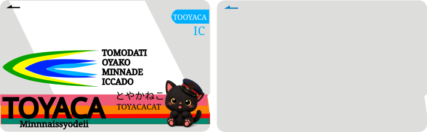

全国どこでも
全国どこでも利用できる、という設定のカードです。
 KIU8249andKOUTOU
KIU8249andKOUTOU

TOYACAABOUT / TOYACA
TOYACAは、全国どこでも利用できる設定の、KIU8249andKOUTOUオリジナル交通系ICカード構想です。
実在の交通系ICカードやサービスではありません。架空鉄道の世界観とあわせて、カードのデザインや設定を紹介していきます。
CONCEPT
全国どこでも利用できる、という設定のカードです。
KIU8249andKOUTOUの創作世界に登場する、オリジナルのカードです。
路線や車両とともに、TOYACAの世界を少しずつ形にしていきます。
GUIDE / TERMS
以下は架空のカードサービスに関する創作設定です。実在の交通機関・店舗では利用できません。
グループ線内の1区間運賃は、大人50円です。こども運賃は大人運賃の半額を基準とし、5円単位で切り上げます。たとえば、計算した運賃が25円の場合は30円です。
TOYACAは全国で利用できる設定です。KOUTOUグループのIC利用可能駅のほか、当社が定めた他社路線でも利用できます。他社路線では、利用する会社の運賃・規則が適用されます。
不正利用があった場合、カードを無効として回収し、所定の運賃・増運賃等をいただきます。カードの所有権は、架空の発行元である高原高等旅客鉄道ホールディングスグループ株式会社に帰属します。
高原高等旅客鉄道ホールディングスグループ株式会社（架空）
愛知県名古屋市藤が丘2-1-3（架空の所在地）
本カードの利用に関する事項は、TOYACAに関する規定によります。
KIU8249andKOUTOU / FICTIONAL RAILWAY